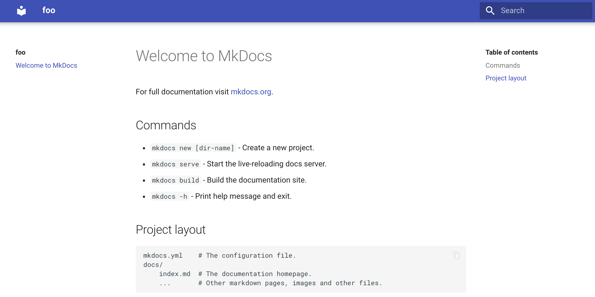
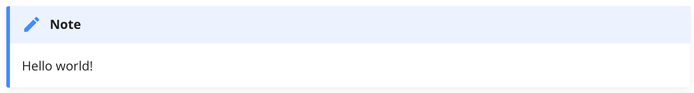

制作代码库的文档网页：（一）基本配置、文档语法、样式定制
背景
前情提要：《如何维护好一个代码库》
我希望为我维护的代码库制作一份可以放在网页上展示的文档，类似Numpy 和PyTorch。接上一篇博文，这份文档应当至少具有以下功能：
- 包括API references和使用示例。
- 使用者通过阅读文档就能掌握99%的调用方法，而维护者也能用文档帮助回忆。
- 文档应当提供安装教程，包括依赖库和必须的安装操作。
- 文档提供历史版本，从而为程序的每个版本配备对应的说明。
目前主流的为项目文档构建静态网页的工具有Sphinx 和 MkDocs等。
当然，部署我的博客用的Hexo也是一个静态网页构建工具。但是据我的理解，Hexo比较适合撘博客，因为很多主题提供了悬浮窗口展示作者信息，而且可以通过标签和类别来检索博文。而项目文档则需要更友好的目录来容纳诸多小标题，内容上也需要更丰富的格式支持，例如自动生成API references，多种醒目的提醒窗口等。
Sphinx vs MkDocs
Sphinx是老牌的项目文档构建工具，具有众多拥趸，像Numpy和PyToch的文档都是用它构建的。MkDocs则是最近几年崛起的新星，双方都有不错的插件和生态系统用于定制各种功能。
我对两者的区别和优缺点知之甚少，但大致来说，似乎MkDocs更轻量级，用Markdown就能轻松撰写文档；而Sphinx支持的功能更丰富，例如生成API references的功能更强，但也需要更复杂的构建方式，例如需要使用reStructuredText (reST) 来写文档，当然，reST本身支持更丰富的效果。
我最终选择了MkDocs. 不光是考虑到Markdown写作更方便，更重要的是MkDocs的Material主题实在是太好看了。而且我目前需要的功能MkDocs都能满足。
Sphinx也有对应的Material主题，作者正在积极向MkDocs的Material主题看齐。
关于Sphinx和MkDocs的比较，可以参考这个Reddit讨论：MkDocs vs. Sphinx for static site generation + documentation : Python，题主表示从Sphinx迁移到了MkDocs，因为 “After spending the last 4+ hours trying to get Sphinx autosummary to work recursively with nested subfolders and a Material theme, I’m giving up. MkDocs seems just a lot simpler to use.” 下面也有答主表示MkDocs的API文档生成插件Mkdocstrings正在持续完善。
下面将介绍如何使用MkDocs构建项目文档，如何配置和使用好看的Material主题，以及如何使用一些好用的插件增强MkDocs/Material的功能。
MkDocs基本配置
参考自：
建议用Anaconda进入一个干净的python3的环境来操作。1
2conda create -n mkdocs python=3.9
conda activate mkdocs
使用pip安装，然后生成一个项目目录用于存放文档，目录名可任取，例如foo_doc。1
2
3pip install mkdocs
mkdocs new foo_doc
cd foo_doc
该目录中会包括一个配置文件mkdocs.yml和用于存放Markdown文档的文件夹docs。1
2
3
4foo_doc
├── mkdocs.yml
└── docs
└── index.md
Material主题也通过pip安装。1
pip install mkdocs-material
然后在mkdocs.yml中修改和增加如下内容（site_name即项目名称）：1
2
3site_name: foo
theme:
name: material
再在终端运行1
mkdocs serve
根据提示，在浏览器中打开http://127.0.0.1:8000/，就能看到文档主页了。

左侧是导航栏，中间是每个Markdown文件里的内容（目前只有一个index.md文档，即主页），右边是当前页面的目录。
特色语法
参考自：Reference - Material for MkDocs
Material主题提供了大量精美的内容块，可以使得文档样式变得非常赏心悦目。使用这些语法可能需要在mkdocs.yml中添加一些设置，请参阅上面的参考连接。
警告 Admonitions
在Markdown中写
1 | !!! note |
效果：

还有其他不同颜色的警告块，而且可以定制警告的标题。
按钮 Buttons
链接可以渲染成按钮的样式。
代码块 Code blocks
代码块与Markdown语法一致。在此基础上，可以给代码加注解按钮，点击按钮显示注解文字。还可以高亮特定行、嵌入外部代码文件等。
内容标签 Content tabls
内容标签可以将多个内容块重叠显示，鼠标点击标签可以切换。这项特性特别有用，例如代码需要同时提供多种编程语言的版本，或者命令需要提供多种操作系统下的版本。
数据表格 Data tables
在Markdown表格语法的基础上，可以实现左中右对齐，及按字母排序等功能。
脚注 Footnots
可以在脚注和原文间转跳，脚注可以写成多行。
版式 Formatting
支持删除线、下划线、文本背景颜色、高亮、注释样式、上下标、快捷键显示为键盘按键样式。
图标和表情符号 Icons + Emojis
可以在文本中插入图标和表情。
图片 Images
图片可以左右对齐、添加图注、懒加载，甚至可以在日间和夜间模式下显示不同的图片。
列表 Lists
支持无序、有序列表，可以无限嵌套，可以使用自定义文本当做表头，支持TODO list的样式。
数学符号 MathJax
支持用MathJax渲染行内和行间公式。
页面样式定制
参考自：Setup - Material for MkDocs (squidfunk.github.io)
mkdocs.yml中可配置大量选项，来定制生成的页面样式。
夜间模式
在theme下增加：
1 | theme: |
右上角搜索栏左侧将出现一个按钮切换日间和夜间模式。
导航栏
在theme下增加：1
2
3
4
5
6
7
8theme:
features:
- navigation.instant
- navigation.tracking
- navigation.tabs
- navigation.expand
- navigation.indexes
- navigation.top
作用分别是：
navigation.instant: 点击内部连接将不必重新加载页面，对大的文档页面很有用。navigation.tracking: 随着滚动，浏览器网址栏将自动更新anchor的名称，即跟在网址最末尾的代表小标题的#xxxx。navigation.tabs: 页面上方出现一个横向导航栏，左侧边栏变成横向导航栏中的某个模块下的各子页面的目录。navigation.expand: 左侧边栏中的二级标题会自动展开。navigation.indexes: 左侧边栏的每个页面的主页将不会单独显示成一个入口，这样更简洁。navigation.top: 增加一个返回顶部的按钮。
Github等外链图标
页面右上角增加一个Github图标，可以显示star和fork个数等信息。同时可以定制显示的名称和图标样式。
1 | theme: |
效果：
还可以在页面底部右侧定制各种社交媒体图标，例如Github，知乎，博客等。1
2
3
4
5
6
7
8
9
10
11extra:
social:
- icon: fontawesome/brands/github
link: https://github.com/wxdrizzle
name: Github
- icon: fontawesome/brands/zhihu
link: https://github.com/wxdrizzle
name: Zhihu
- icon: fontawesome/solid/blog
link: https://wxdrizzle.github.io
name: Blog
效果：
字体
可以分别调整代码和其他文字的字体。1
2
3
4theme:
font:
code: "Roboto Mono"
text: "Open Sans"
制作代码库的文档网页：（一）基本配置、文档语法、样式定制